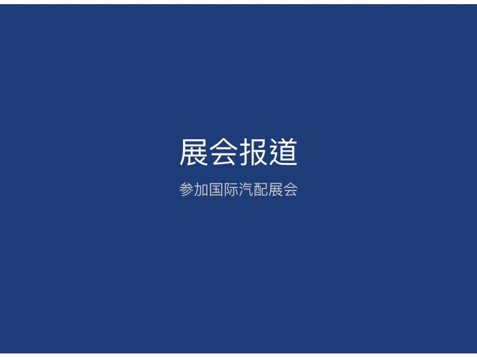
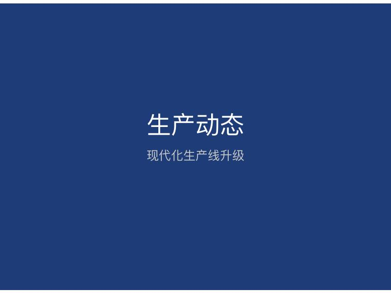
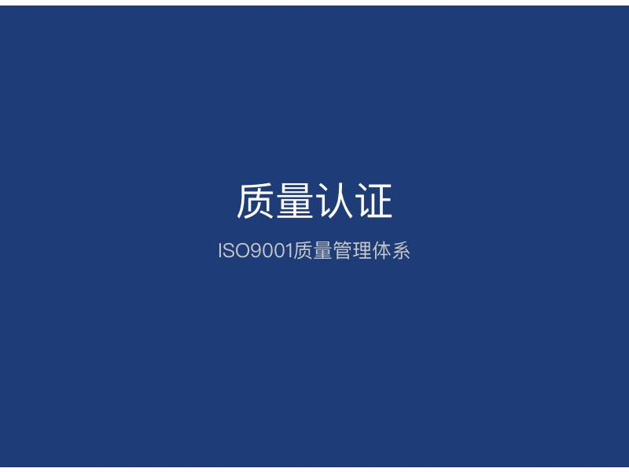
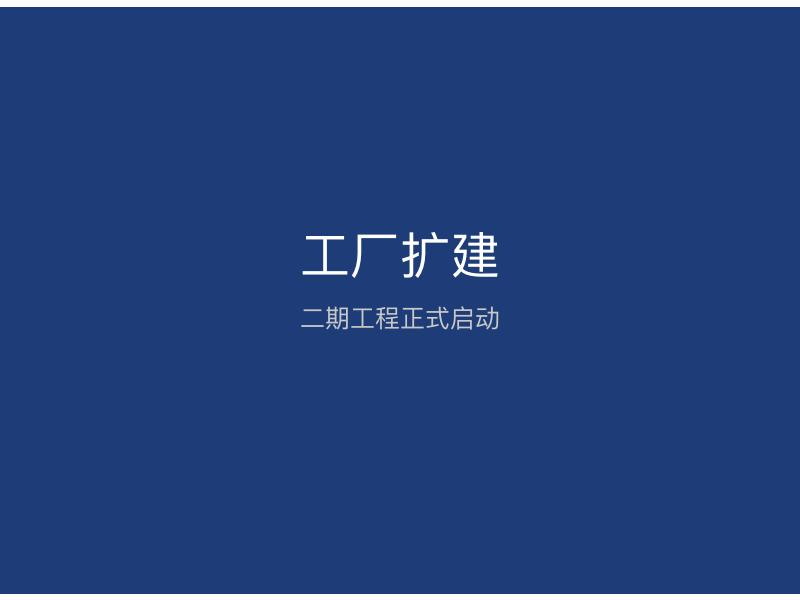

Узнайте о последних разработках и отраслевых новостях SHAKOLN Auto Parts

SHAKOLN Auto Parts будет участвовать в Международной выставке автозапчастей в Гуанчжоу с 10 по 12 апреля 2024 года, демонстрируя новейшие запчасти для Mercedes-Benz и BMW. Мы настроим профессиональный стенд на выставке для демонстрации ключевых продуктов и технических преимуществ компании. Добро пожаловать посетить и обсудить.
Читать далее →
SHAKOLN Auto Parts недавно представила новую серию запчастей для Mercedes-Benz, включая двигатель, шасси, электротехнику и кузовные изделия. Эти продукты изготовлены из высококачественных материалов и передовых технологий, строго в соответствии с заводскими стандартами для идеальной совместимости с оригинальным автомобилем. Новая серия уже принимает заказы, добро пожаловать на консультацию и покупку.
Читать далее →
SHAKOLN Auto Parts недавно успешно получила сертификацию системы управления качеством ISO9001, что свидетельствует о том, что уровень управления качеством компании достиг международных стандартов. Благодаря сертификации компания будет дальше укреплять управление качеством, повышать качество продукции и уровень обслуживания, предоставляя клиентам более надежные продукты и услуги.
Читать далее →SHAKOLN Auto Parts недавно заключила соглашения о сотрудничестве с несколькими автосалонами Mercedes-Benz и BMW 4S, став их официальным поставщиком запчастей. Это сотрудничество еще больше расширит долю рынка компании и повысит узнаваемость бренда. В то же время компания будет предоставлять более профессиональную техническую поддержку и послепродажное обслуживание автосалонам 4S, вместе создавая высококачественный опыт обслуживания клиентов.
Читать далее →
SHAKOLN Auto PartsFactory expansion project officially launched，Total project investment1000million yuan，expected to beJune 2024completed。After expansion，Factory production capacity will increase50%，able to better meet market demand。At the same time，The company will introduce advancedОборудованиеand technology，further improveТоварqualityandproduction efficiency。
Читать далее →